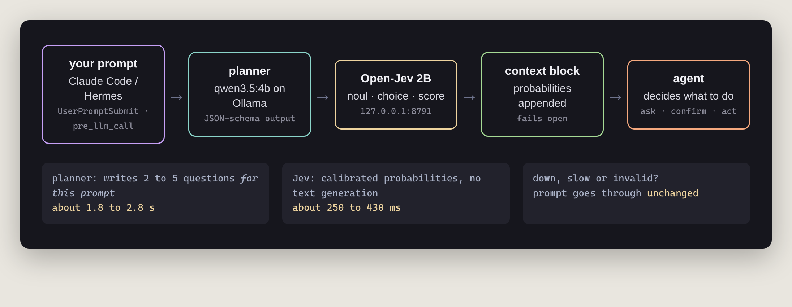
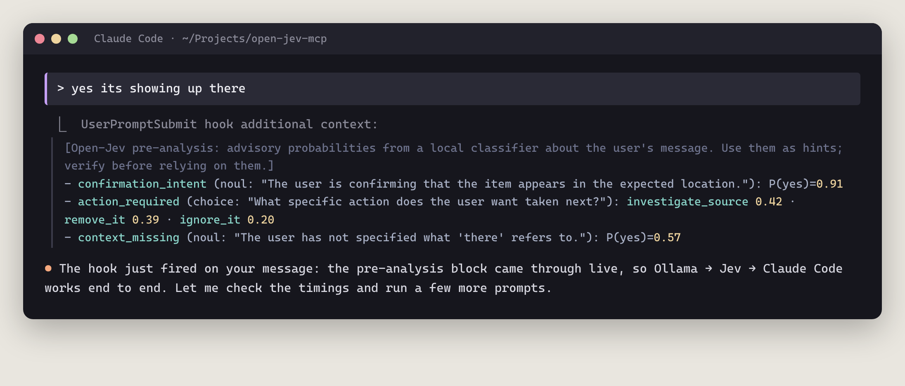
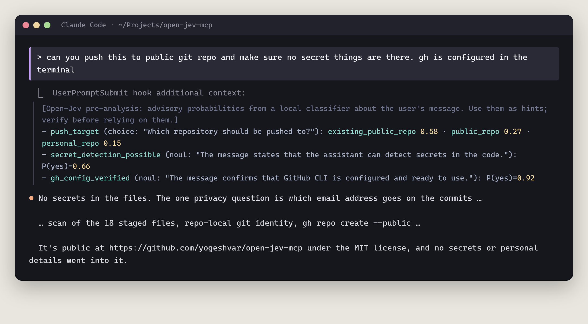
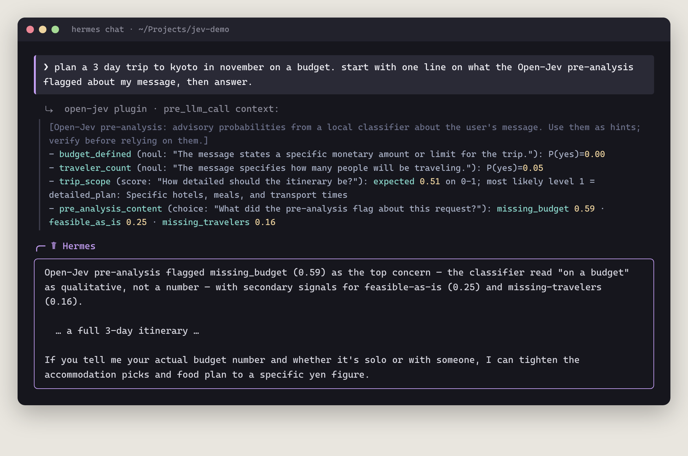
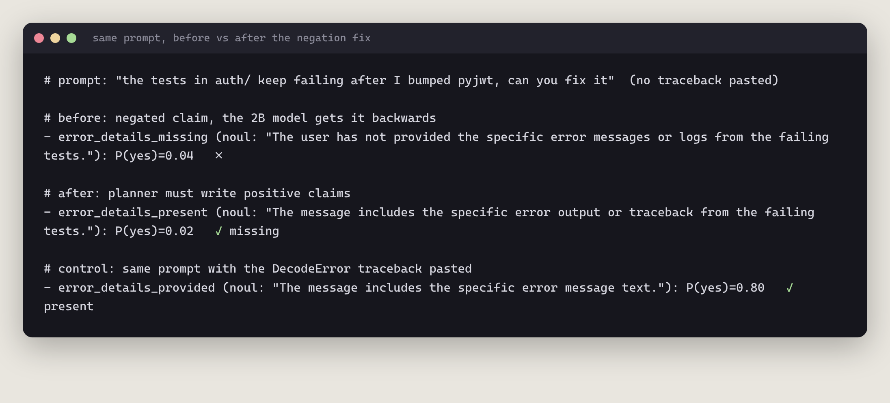
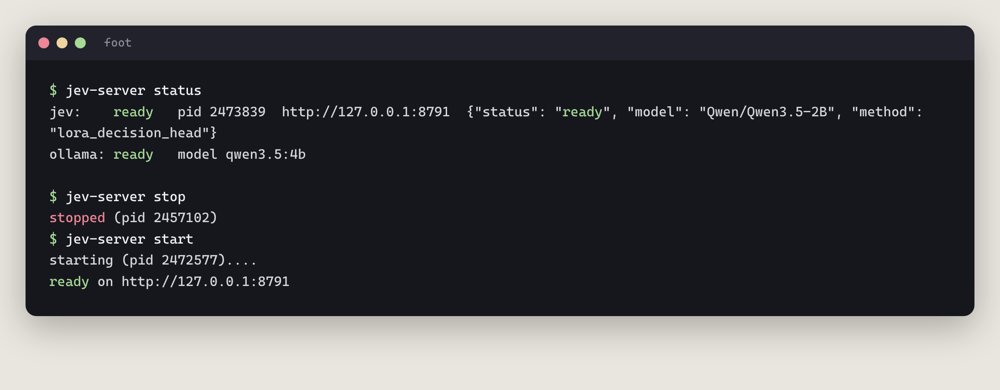
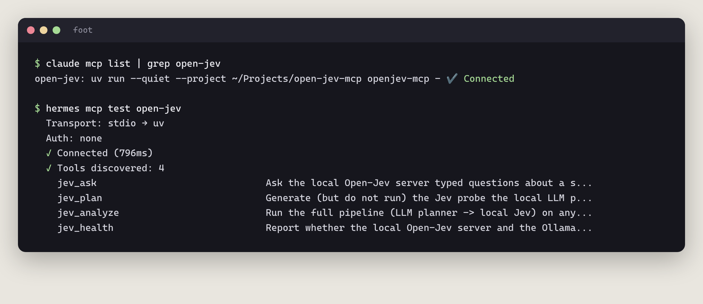
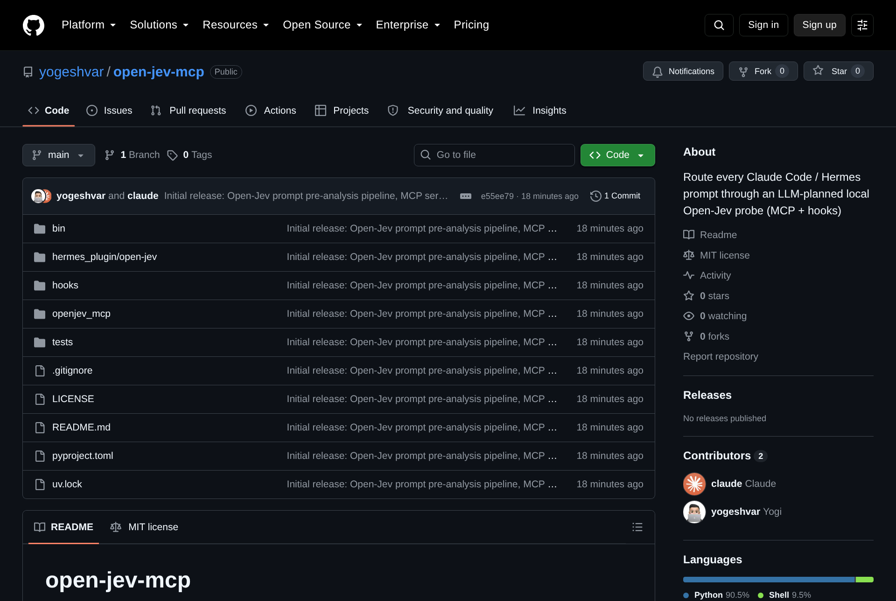

September 21, 2026
I type a lot of lazy prompts. "fix the tests". "clean up my home dir". "plan a trip on a budget". My agents are smart enough to figure most of it out. But they don't always stop and notice what I didn't say, or that "clean up" secretly means "delete stuff forever". 😅
So I built a tiny second opinion that runs before the agent even sees my message. Every prompt I send to Claude Code or Hermes now goes through a local classifier first, and the agent gets a little block of probabilities along with my prompt. It's open source: yogeshvar/open-jev-mcp.
TypeSafe's Jev is a model that doesn't write text at all. You give it some context, a few typed questions, and it hands back calibrated probabilities. There are three kinds of questions:
0.96billing 0.94 · engineering 0.061.2 on 0 to 2Open-Jev by Zefan Cai is an open implementation of the idea: a LoRA adapter and a scoring head on top of Qwen3.5-2B that runs on my own GPU. No autoregressive generation, no parsing JSON out of a chatty model. Just numbers, fast.
Open-Jev is great when you know the questions. But I don't want to write questions for every prompt. The right questions for "fix my failing tests" are totally different from the ones for "plan a Kyoto trip". So the pipeline has two stages:
qwen3.5:4b on Ollama) reads my prompt and writes 2 to 5 noul/choice/score questions for that specific prompt. The output is forced into a JSON schema and then validated against Open-Jev's own request rules.
In Claude Code it's a UserPromptSubmit hook. In Hermes it's a tiny plugin using the pre_llm_call hook. Both call the same Python pipeline, and it fails open: if Ollama or Jev is down, nothing breaks and the prompt goes through as-is.
The first time it fired, I was just telling Claude the server was up. Even a throwaway message gets probed:

context_missing. Hold that thought, it's lying. More on that below.And here it is on a real task: asking Claude to push the repo publicly without leaking anything. Jev picked up that I'd confirmed gh was ready (0.92), and Claude went straight to scanning the staged files for secrets before publishing:

Same pipeline, different agent. I asked Hermes for a budget Kyoto trip. Jev noticed I never gave a number (budget_defined 0.00) or said how many people are going (0.05), and Hermes closed with exactly that follow-up question:

hermes chat run. The planner even added a meta question about the pre-analysis itself, because my prompt mentioned it. Cute.Remember context_missing? Early on, the planner loved writing questions like "The user has not provided the error output." Totally reasonable. Except the 2B model is bad at negation. When that claim was obviously true, it said 0.04. Backwards.
The fix was boring and it worked: the planner is now told to only write positive claims ("The message includes the error output"), and a validator rejects any yes/no question containing "not", "missing", "unclear" and friends, asking the planner to retry. A low probability now simply means "missing".

Running python -m jev.server --checkpoint … --device cuda:0 --max-length 4096 … in a terminal tab gets old fast. So there's a small script for it:

status checks both Jev and the Ollama planner model. A warm start takes about 4 seconds.The hooks are the automatic part. The same package is also an MCP server, so both agents can call Jev on purpose: jev_ask for your own typed questions, jev_analyze to run the full pipeline on any text, jev_plan to see the questions without running Jev, and jev_health.

rm -rf scored 0.95. The 2B model reacts to scary words more than to meaning.OPENJEV_DISABLE=1 turns it off.You need an NVIDIA GPU, Ollama and uv. The README walks through setting up Open-Jev, the planner model, and wiring the hook and MCP into Claude Code and Hermes.

Big thanks to Zefan Cai for Open-Jev, and to TypeSafe for the Jev idea. And yes, Claude Code helped me build this, while the hook was probing every message I sent it. Very meta. 🙃